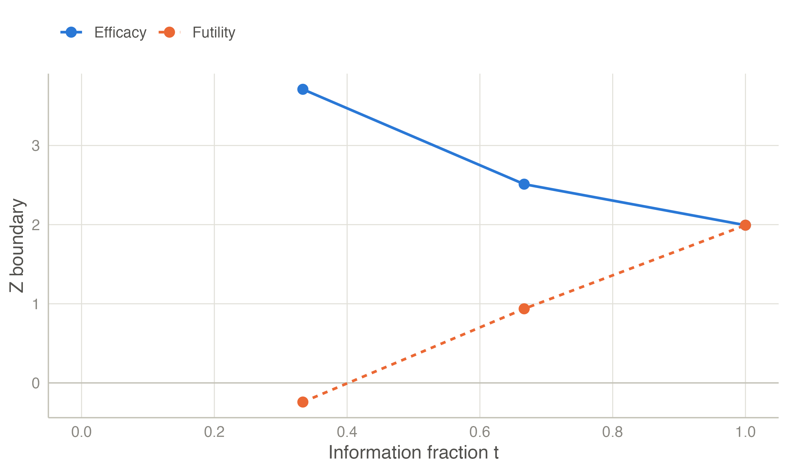
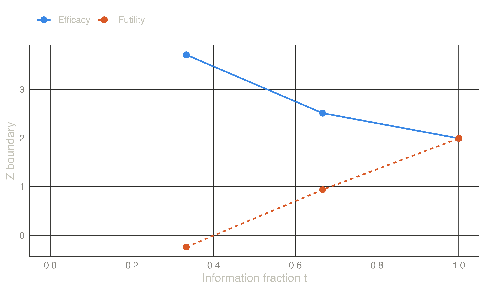
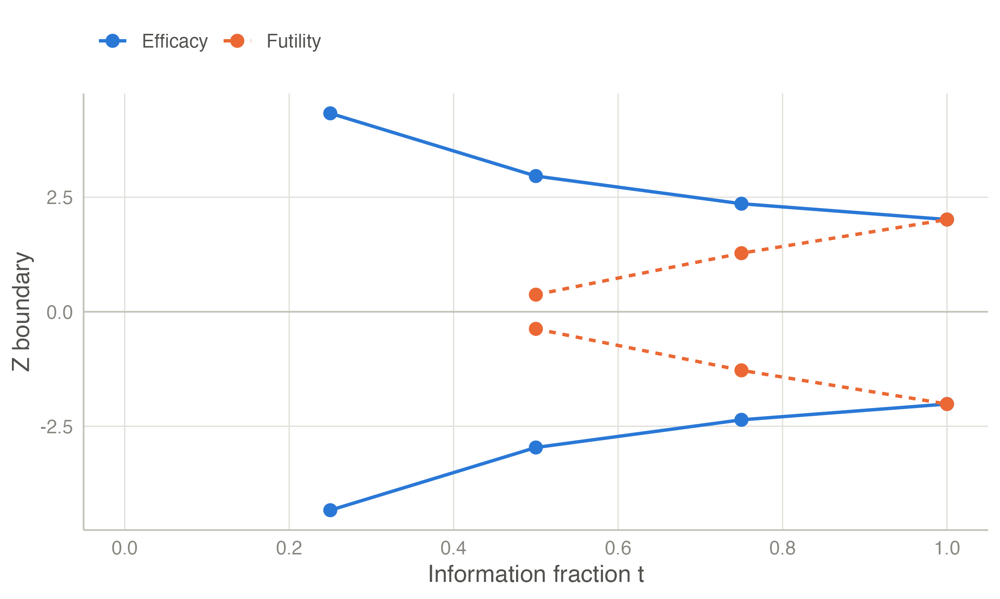
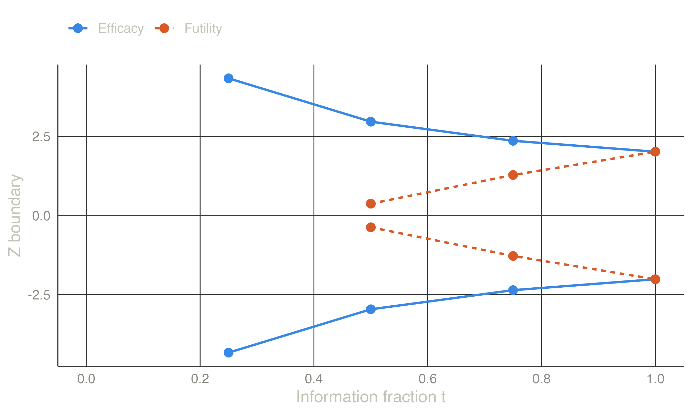

| Design | b (looks 1-3) | a (looks 1-2) | Max n | E n | H0 | E n | H1 | Actual alpha |
|---|---|---|---|---|---|---|
| No futility | 3.710, 2.511, 1.993 | — | 1.0119 | 1.0098 | 0.8115 | 0.0250 |
| Non-binding | 3.710, 2.511, 1.993 | -0.242, 0.937 | 1.0665 | 0.6242 | 0.8233 | 0.0233 |
| Binding | 3.710, 2.511, 1.958 | -0.261, 0.909 | 1.0454 | 0.6168 | 0.8112 | 0.0250 |
Futility boundaries
Stopping when success has become unlikely: beta spending, fixed and conditional-power rules, binding versus non-binding, and the two-sided inner wedge.
Why stop for futility?
Efficacy boundaries alone never shorten a trial of an ineffective treatment: under \(H_0\) it runs to its maximum size. A futility boundary \(a_k\) stops the study when the evidence of benefit is weak — for a one-sided design, when \(Z_k \le a_k\). Patients are no longer randomised to a treatment that does not work, and resources are freed (Lachin 2005). The price is a small loss of power, which is recovered by a slightly larger maximum sample size.
Binding or non-binding?
- Binding futility: the efficacy boundaries are computed assuming the trial stops whenever the futility boundary is crossed. The efficacy boundaries are slightly lower. But if the monitoring committee decides to continue after crossing the futility boundary, the type I error is no longer controlled.
- Non-binding futility: the efficacy boundaries are computed ignoring the futility rule, so \(\alpha\) is controlled whether or not the rule is followed. The actual type I error is slightly below \(\alpha\) when the rule is followed. This is the usual choice in confirmatory trials, because a committee must remain free to weigh other evidence (U.S. Food and Drug Administration 2019).
Power is always computed assuming the futility rule is followed.
Ways to define the futility boundary
Beta spending. The type II error is spent like \(\alpha\), with any of the spending families. At look \(k\), \(a_k\) solves
\[ P_{\theta_1}\!\left(\text{continue to look } k,\ Z_k \le a_k\right) = \beta(t_k) - \beta(t_{k-1}). \]
The maximum information is then chosen so that the two boundaries meet at the final look, \(a_K = b_K\). That gives power exactly \(1-\beta\) (Pampallona et al. 2001).
Fixed z-values. For example, stop if \(Z < 0\) (the estimate points the wrong way) at the halfway look. The maximum information is solved for power.
Conditional power. Stop if the probability of eventually rejecting \(H_0\), given the current data, falls below a threshold \(\gamma\) (Gordon Lan et al. 1982; Lachin 2005). Under the current trend and with only the final analysis remaining, this converts to the \(z\)-bound
\[ a_k = \sqrt{t_k}\,\left(b_K - \sqrt{1 - t_k}\; z_{1-\gamma}\right). \]
Pampallona–Tsiatis. A power-family shape for both boundaries, solved jointly so that they meet at the last look (Pampallona and Tsiatis 1994).
Example: adding futility to an O’Brien–Fleming design
One-sided \(\alpha = 0.025\), power 90 %, three equally spaced looks. The efficacy boundary uses Lan–DeMets O’Brien–Fleming-type spending. Futility uses Hwang–Shih–DeCani beta spending with \(\gamma = -2\).
The non-binding futility boundary cuts the expected sample size under \(H_0\) by 38 %, while the maximum sample size grows by only 5.4 %. With the non-binding rule, efficacy boundaries do not change and the actual \(\alpha\) (if futility stops are obeyed) falls below 0.025. With the binding rule, the efficacy boundaries are lowered until the actual \(\alpha\) is exactly 0.025.


Two-sided designs: the inner wedge
In a two-sided design, “futility” means the estimate is close to zero in either direction. The study stops for futility when \(|Z_k| < a_k\), an inner wedge between the two efficacy boundaries (Pampallona and Tsiatis 1994).


NoteHow jmsequential computes two-sided beta spending
jmsequential follows rpact (version 3.3.0 or later), the reference implementation.
- The corresponding one-sided design at level \(\alpha/2\) is solved first. Looks where its futility bound would be negative get no inner wedge: a wedge around zero that early would stop almost no trial.
- Beta spending is rescaled to start at the first look that does have a wedge.
With this rule, jmsequential’s two-sided designs agree with rpact to \(10^{-6}\). In the example above, the first look has no wedge for this reason.
NoteConditional-power rules with binding futility
For a binding design, jmsequential makes the conditional-power bound self-consistent: at the futility boundary, the conditional power computed with the design’s actual final boundary equals the chosen threshold. So the interim report shows exactly the threshold at the boundary. rpact converts with the non-binding final boundary instead. For non-binding designs the two programs agree exactly.
TipIn jmsequential
Sequential → Group Sequential Design (from version 0.1.0). Under Futility boundary choose None, Beta spending (with its family and parameter), Fixed z-values, Conditional power, or use the Pampallona–Tsiatis efficacy option. Tick Binding futility for a binding rule. The same options apply to one- and two-sided designs.
The example in jamovi
- Sequential → Group Sequential Design. The defaults are the efficacy part of the example: one-sided α = 0.025, power 0.9, three analyses, Lan–DeMets O’Brien–Fleming spending.
- In the Futility boundary box choose Beta spending. Its default function is Hwang–Shih–DeCani with γ = −2; leave Binding futility unticked.
The Boundaries table holds the non-binding row of Table 1: efficacy 3.71, 2.51 and 1.99, futility −0.242 and 0.937. The plot below it is Figure 1.

References
Gordon Lan, K. K., Richard Simon, and Max Halperin. 1982. “Stochastically Curtailed Tests in Long–Term Clinical Trials.” Communications in Statistics. Part C: Sequential Analysis 1 (3): 207–19. https://doi.org/10.1080/07474948208836014.
Lachin, John M. 2005. “A Review of Methods for Futility Stopping Based on Conditional Power.” Statistics in Medicine 24 (18): 2747–64. https://doi.org/10.1002/sim.2151.
Pampallona, Sandro, and Anastasios A. Tsiatis. 1994. “Group Sequential Designs for One-Sided and Two-Sided Hypothesis Testing with Provision for Early Stopping in Favor of the Null Hypothesis.” Journal of Statistical Planning and Inference 42 (1-2): 19–35. https://doi.org/10.1016/0378-3758(94)90187-2.
Pampallona, Sandro, Anastasios A. Tsiatis, and Kyungmann Kim. 2001. “Interim Monitoring of Group Sequential Trials Using Spending Functions for the Type i and Type II Error Probabilities.” Drug Information Journal 35 (4): 1113–21. https://doi.org/10.1177/009286150103500408.
U.S. Food and Drug Administration. 2019. Adaptive Designs for Clinical Trials of Drugs and Biologics: Guidance for Industry.